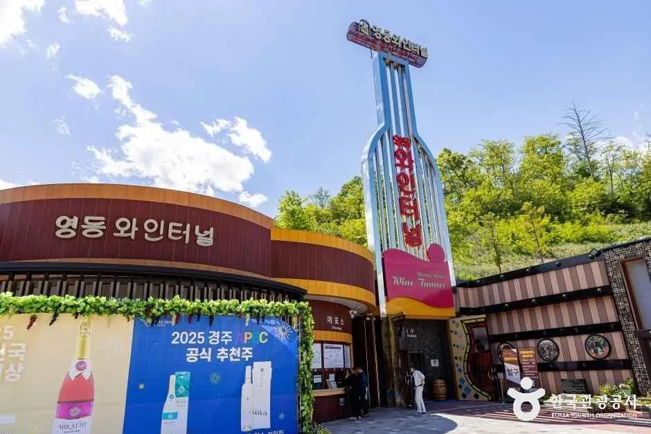
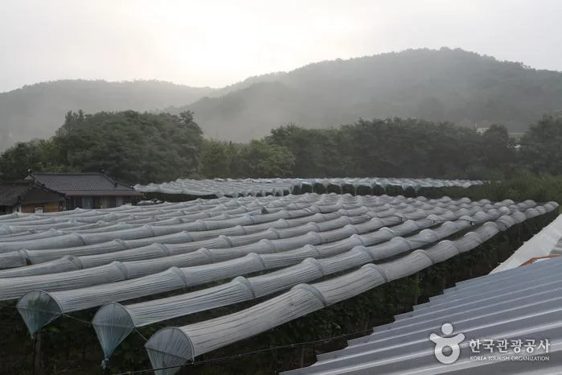

▲ 전주 한옥마을 골목. 유네스코 음식창의도시로 지정된 전주는 가을 미식 드라이브의 대표 종착지로 꼽힌다
1. 2026년 추석 연휴, 실제로 며칠을 쉴 수 있나
2026년 추석은 9월 25일(금)이다. 정부 지정 연휴는 9월 24일(목)부터 26일(토)까지 사흘이지만, 연휴 마지막 날인 26일(토) 다음 날이 일요일(9월 27일)이라 별도 연차 없이도 목요일부터 일요일까지 실질적으로 나흘을 쉴 수 있다. 연휴 안에 일요일이 끼어 있지 않아 대체공휴일은 따로 지정되지 않았다.
귀성·귀경이 몰리는 24~26일 당일보다는, 연휴 시작 전인 22~23일이나 연휴 마지막 날인 27일 전후로 하루 이틀 여유를 붙이면 정체를 피하면서 미식 여행 시간을 벌 수 있다. 아래 두 코스는 이 여유 시간에 다녀올 수 있는 실제 동선을 기준으로 짰다.

▲ 전주 한옥마을 전경. 700여 채의 한옥이 밀집해 있으며, 유네스코가 지정한 음식창의도시이기도 하다 ⓒ 한국관광공사
2. 연휴 직전, 호텔가에도 '가을 미식' 이벤트가 몰린다
추석을 앞두고 서울 시내 호텔들도 가을 미식·와인 행사를 잇달아 준비했다. JW 메리어트 동대문 스퀘어 서울은 9월 18일부터 20일까지 사흘간 호텔 앞 야외 데크와 더 라운지에서 '와인 앤 버스커'를 연다. 100여 종의 프리미엄 와인 테이스팅과 미국산 소고기·돼지고기 페어링 메뉴, 라이브 공연 9팀이 함께 어우러지는 자리다. 올해는 캘리포니아와인협회(CWI)가 처음 참여해 9월 '캘리포니아 와인의 달'을 기념하는 도슨트 세션도 마련된다. 자세한 프로그램은 국제뉴스 보도에서 확인 가능하다. 바로가기
이 밖에도 조선호텔앤리조트는 김치 요리와 위스키를 페어링하는 'K-타파스' 클래스를, 파크 하얏트 서울은 와인 스펙테이터 '2026 레스토랑 어워즈' 수상 와인 프로그램을 선보이는 등 도심에서도 가을 미식을 즐길 방법은 다양하다. 다만 이런 도심 행사는 연휴 본격 이동 전인 18~20일에 몰려 있어, 지방 드라이브와 일정이 겹치지 않도록 미리 확인해두는 게 좋다.
3. 코스 A — 중부내륙 와인로드: 영동 와인터널 → 영천 와이너리
포도 산지를 그대로 잇는 코스다. 충북 영동은 일교차가 크고 배수가 좋은 산간 지형 덕에 국내 대표 포도·와인 산지로 꼽히며, 약 40개 영동 와이너리의 와인을 한자리에서 만날 수 있는 '영동 와인터널'이 핵심 거점이다. 레인보우 힐링 관광지 안에 자리한 이 420m 길이의 터널은 연중 서늘한 실내 온도를 유지하며, 포도 재배 역사부터 세계 와인 문화, 시음 코너까지 10개 테마존으로 구성돼 있다.

▲ 영동 와인터널 입구. 420m 길이의 폐터널을 개조해 지역 와이너리 40여 곳의 와인을 전시·판매·시음하는 공간으로 꾸몄다 ⓒ 한국관광공사
영동에서 상주영천고속도로를 타고 남동쪽으로 내려가면 경북 영천이다. 영천은 일조량이 풍부하고 강수량이 적어 '전국 최고 품질의 포도'가 나는 산지로, 18개 와이너리가 운영 중이다. 영천와인사업단이 운영하는 체험 프로그램은 오전 10시부터 12시까지 약 2시간 동안 포도밭에서 직접 포도를 수확하고, 으깨어 발효액을 만든 뒤 와이너리에서 완성된 와인을 시음하는 순서로 진행되며 참가비는 1인 1만 2,000원 수준이다(점심 별도, 시비 일부 지원). 그물망을 씌운 포도밭 사이 산길을 걷는 것만으로도 가을 정취가 짙다.

▲ 영천의 포도밭. 새와 병해로부터 포도를 보호하기 위해 방조망을 씌운 모습으로, 9~10월이 본격적인 수확철이다 ⓒ 한국관광공사
영동이 '와인의 고장'으로 자리 잡은 과정도 눈여겨볼 만하다. 1960년대 농가들이 수확한 포도를 발효시켜 마셔보던 소박한 시도에서 출발해, 1990년대 중반 포도 가격 폭락을 계기로 가공을 통한 부가가치 창출로 방향을 틀었다. 1995년 재배 농민 170여 명이 포도가공조합을 꾸렸고 이듬해 영농조합법인이 출범했으며, 2004년 영동군 출자로 와인코리아 농업회사법인으로 개편됐다. 2005년에는 국내 유일의 포도·와인산업특구로 지정돼 지금의 40여 곳 와이너리 체제를 갖췄다. 반세기 넘게 이어진 이 과정 덕분에 영동은 단순 관광지가 아니라 실제 와인 생산 기반을 갖춘 산지로 평가받는다.
📍 코스 A 참고 정보
영동 와인터널: 충북 영동군 레인보우 힐링 관광지 내(수도권 기준 경부고속도로 경유 약 2시간 안팎)
영천 와인사업단: 경북 영천시 천문로 622-13, 포도 수확 체험은 8월~10월 25일까지 운영
We와이너리(영천): 경북 영천시 금호읍 금호로 386-21, 숙박·바비큐 병행 가능
4. 코스 B — 호남 미식벨트: 전주 한옥마을 → 담양 죽녹원·떡갈비 → 보성 녹차밭
음식으로 시작해 풍경으로 마무리하는 코스다. 전주는 유네스코 음식창의도시로 지정된 도시답게, 한옥마을 골목마다 비빔밥·콩나물국밥·길거리 간식이 촘촘히 늘어서 있다. 한지길·태조로 일대를 걸으며 김치·전통주·비빔밥 만들기 체험까지 곁들이면 반나절이 훌쩍 지나간다.
전주에서 남쪽으로 내려가면 담양이다. 죽녹원의 사계절 푸른 대나무숲과, 바로 옆 천연기념물 관방제림의 오래된 느티나무 숲길을 지나면 담양 특유의 대통밥·떡갈비 정식을 만날 수 있다. 대통밥정식을 시키면 죽순된장국·죽순들깨볶음 등 죽순 반찬이 함께 나오는데, 담양떡갈비거리에 이런 식당들이 모여 있다. 담양 메타세쿼이아길(국도 24호선 옛길)의 가로수 터널도 놓치기 아까운 가을 드라이브 구간이다.
죽녹원은 연간 방문객이 110만 명을 넘는 담양의 상징적 관광지로, 2015년 담양세계대나무박람회를 계기로 주변에 약 800m 규모의 떡갈비거리가 형성되며 대나무숲 산책과 향토음식을 함께 즐기는 코스로 자리 잡았다. 보성 녹차밭 역시 일제강점기인 1939년 제다업체 대한다업이 설립되고 1957년 장영섭 회장이 봉산리 일대 임야를 인수해 녹차밭과 삼나무·편백나무를 조림하면서 지금의 풍경이 갖춰졌다. 80년 가까이 이어진 재배 역사 덕분에 보성은 단일 산지로는 국내 최대 규모의 차밭을 보유하게 됐고, 초록빛 이랑과 삼나무숲이 어우러진 풍경 자체가 축제 유무와 무관하게 사시사철 관광 자원으로 기능한다.

▲ 담양 메타세쿼이아길. 죽녹원과 나란히 붙어 있어 대나무숲과 단풍을 함께 즐길 수 있다 ⓒ 한국관광공사

▲ 상공에서 본 담양 메타세쿼이아길. 곧게 뻗은 가로수길 옆으로 비닐하우스 농지가 펼쳐진다 ⓒ 한국관광공사
담양에서 순천 방향으로 더 내려가면 보성이다. 국내 최대 규모의 차밭이 있는 보성은 매년 5월 '보성다향대축제'가 대표적이지만, 축제가 없는 가을에도 초록빛 차밭과 붉은 단풍이 겹쳐지는 풍경만으로 드라이브 종착지로 손색이 없다. 주암호 습지에서 보성 IC 방향으로 이어지는 국도 18호선 메타세쿼이아 가로수 구간도 함께 지나가는 길이다.
▲ 보성 녹차밭. 가을에는 초록빛 차밭과 단풍의 색 대비를 볼 수 있다 ⓒ 한국관광공사

▲ 안개가 내려앉은 보성 녹차밭. 이른 아침 방문하면 삼나무숲과 어우러진 풍경을 볼 수 있다 ⓒ 한국관광공사
5. 지역별 미식 드라이브 코스 한눈에 보기
| 코스 | 주요 경유지 | 테마 | 추천 일정 |
|---|---|---|---|
| 서울 도심 | JW메리어트 동대문 '와인 앤 버스커' | 와인·미국산 육류 페어링 | 9월 18~20일(연휴 전) |
| 코스 A | 영동 와인터널 → 영천 와이너리 | 포도 수확·와인 시음 | 당일~1박 2일 |
| 코스 B-1 | 전주 한옥마을 음식거리 | 비빔밥·콩나물국밥·길거리 간식 | 반나절 |
| 코스 B-2 | 담양 죽녹원·메타세쿼이아길·떡갈비거리 | 대나무숲·떡갈비·대통밥 | 반나절~1일 |
| 코스 B-3 | 보성 녹차밭·주암호 메타세쿼이아 구간 | 차밭 풍경·가을 단풍 | 반나절 |
6. 드라이브 팁 — 정체를 피해 움직이는 법
2026년 추석 연휴는 대체공휴일이 없는 대신, 24~26일 사흘에 이동이 몰릴 가능성이 크다. 코스 A(영동·영천)와 코스 B(전주·담양·보성)는 방향이 서로 달라 하루에 모두 소화하기보다는 연휴 앞뒤로 나눠 다녀오는 편이 현실적이다. 연휴 시작 전인 22~23일에 미리 출발하거나, 연휴 마지막 날인 26일 저녁 대신 27일 낮에 복귀 일정을 잡으면 고속도로 정체 구간을 상당 부분 피할 수 있다.
✅ 가을 미식 드라이브, 이것만은 확인하세요
· 2026년 추석은 9월 25일(금), 공식 연휴는 9월 24~26일(대체공휴일 없음)
· JW메리어트 동대문 '와인 앤 버스커'는 9월 18~20일, 연휴 전 일정
· 영천 포도 수확 체험은 8월~10월 25일까지만 운영
· 코스 A(영동·영천)와 코스 B(전주·담양·보성)는 방향이 달라 별도 일정 권장
· 보성 녹차밭 축제(보성다향대축제)는 매년 5월로, 가을에는 축제 없이 풍경만 즐기는 방문
7. 정리
2026년 추석 연휴는 대체공휴일 없이 9월 24일부터 26일까지 사흘이지만, 주말과 이어지며 실질적으로 나흘을 쉴 수 있다. 이 틈을 이용해 영동 와인터널과 영천 와이너리를 잇는 중부내륙 와인로드, 전주 한옥마을과 담양 죽녹원·보성 녹차밭을 잇는 호남 미식벨트 중 하나를 골라 떠나보는 것도 방법이다. 연휴 본격 이동일인 24~26일을 피해 하루 이틀 일찍 움직이면, 정체는 줄이고 미식과 풍경을 즐기는 시간은 늘릴 수 있다.